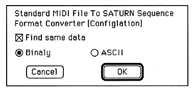

The meaning of each check box is as follows.
Find same data
Detects if the same data appears multiple times in the performance data, and if there is, omits the second and subsequent times. This does not affect the performance and is non-degrading compression.
It takes some time to detect whether there is repeated data, which increases exponentially with the length of the performance data. If you want to convert many times during the test, you should not check this box, but only check it during the production.
○ Binary ○ ASCII
Select whether to output the final output file in ASCII format or binary format. If you output in ASCII format, you can easily check MIDI note information and control changes.